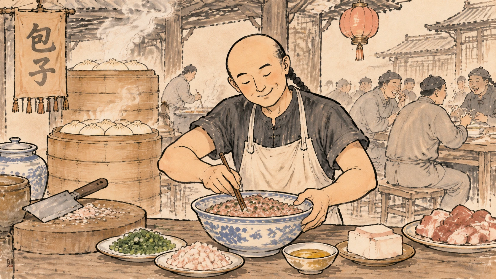

第一步 · 调馅
让肉馅更香、更润
依次点击汤、猪油和肉馅，把普通馅料调配得更有香气。
已加入 0 / 3 样
环境探索 · 好奇
天津老街起了一层白汽。顺着香味走近包子铺，点一点招牌、蒸笼、 正在忙碌的狗子和桌边的顾客，从四个方向认识这家小店。

点一点画面里的四处细节
插画素材：包子铺里的温暖忙碌时光
手艺互动 · 专注
狗子本名高贵友。他把日常饮食里的经验带进馅料，又用褶子让普通包子有了自己的样子。 跟着四个步骤，看看手艺怎样在细节里成形。

人物小传
街坊更熟悉“狗子”这个小名。他在包子铺里手不停、话不多， 真正让顾客记住他的，是馅料的香气和包子外形的细致。
第一步 · 调馅
依次点击汤、猪油和肉馅，把普通馅料调配得更有香气。
已加入 0 / 3 样
点击配料，让香味一层层进入馅中
点击面皮中央，依次放入馅料、收边、压实。
按顺序点击每一道褶：0 / 18
点击笼盖，看看刚出笼的包子。
包子制作画面为 CSS 插画占位
情节互动 · 趣味
门前摆着大海碗和筷子。顾客自己取包子、自己留钱；狗子只顾做包子、收钱，很少开口招呼。
经营场景为 CSS 占位
动态叙事 · 惊喜
一开始，“狗不理”只是街坊的一句闲话。包子好吃、名字好记， 又说出了狗子忙于做事的模样，这三个字才慢慢变成招牌。
点击空白招牌
街坊的一句话，怎样变成一块招牌？
沉浸式收束 · 回味
故事里的包子走出天津街巷，通过进献与品尝进入更大的视野。 名声越传越远，最初那个不肯说话的忙碌身影，反而成了最鲜明的招牌。
顾客与街坊的口耳相传，让包子铺成为街头熟悉的一处所在。
故事中的进献情节让地方手艺进入更大的视野。
品尝与流传把“狗不理”从街坊称呼变成了众人熟知的名号。
阅读之后
可以从“狗子”的哪一种品质写起，也可以想想：一门手艺为什么能够让人记住。
读后笺只保存在当前浏览器。
原文与设计稿分栏
这份文档主要包含交互设计说明，不是完整原文。页面只把文档中明确出现的 “狗子行呵，不理人啦！”标作摘引；其余内容标明为情节概述。 获得授权并核对出版版本后，请在 `script.js` 的 `originalText` 数组中补入全文。